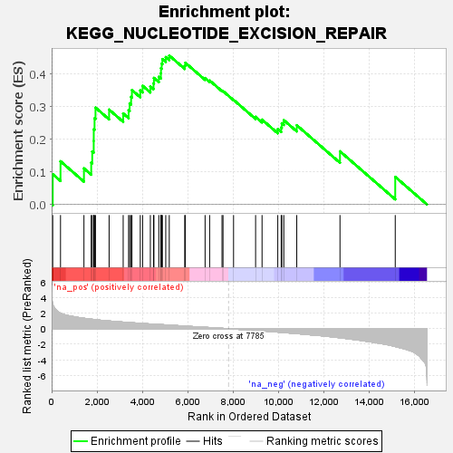
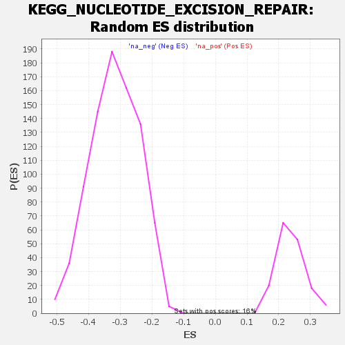

| | | Dataset | all_genes |
| Phenotype | NoPhenotypeAvailable |
| Upregulated in class | na_pos |
| GeneSet | KEGG_NUCLEOTIDE_EXCISION_REPAIR |
| Enrichment Score (ES) | 0.45768583 |
| Normalized Enrichment Score (NES) | 1.9168743 |
| Nominal p-value | 0.0 |
| FDR q-value | 0.01995134 |
| FWER p-Value | 0.148 |
Table: GSEA Results Summary

Fig 1: Enrichment plot: KEGG_NUCLEOTIDE_EXCISION_REPAIR
Profile of the Running ES Score & Positions of GeneSet Members on the Rank Ordered List
| SYMBOL | RANK IN GENE LIST | RANK METRIC SCORE | RUNNING ES | CORE ENRICHMENT | | 1 | DDB2 | 48 | 3.185 | 0.0931 | Yes |
| 2 | ERCC8 | 391 | 2.002 | 0.1327 | Yes |
| 3 | MNAT1 | 1423 | 1.351 | 0.1109 | Yes |
| 4 | GTF2H2 | 1743 | 1.237 | 0.1288 | Yes |
| 5 | GTF2H5 | 1788 | 1.220 | 0.1629 | Yes |
| 6 | RAD23B | 1853 | 1.197 | 0.1951 | Yes |
| 7 | CETN2 | 1855 | 1.197 | 0.2311 | Yes |
| 8 | RFC1 | 1890 | 1.187 | 0.2648 | Yes |
| 9 | XPA | 1932 | 1.173 | 0.2976 | Yes |
| 10 | RFC3 | 2531 | 0.998 | 0.2915 | Yes |
| 11 | XPC | 3151 | 0.855 | 0.2797 | Yes |
| 12 | ERCC2 | 3390 | 0.804 | 0.2895 | Yes |
| 13 | RPA3 | 3436 | 0.794 | 0.3107 | Yes |
| 14 | RFC4 | 3500 | 0.782 | 0.3304 | Yes |
| 15 | RPA1 | 3537 | 0.776 | 0.3516 | Yes |
| 16 | GTF2H3 | 3904 | 0.698 | 0.3504 | Yes |
| 17 | ERCC1 | 4007 | 0.679 | 0.3647 | Yes |
| 18 | POLE2 | 4348 | 0.616 | 0.3627 | Yes |
| 19 | LIG1 | 4488 | 0.591 | 0.3720 | Yes |
| 20 | CUL4B | 4505 | 0.588 | 0.3888 | Yes |
| 21 | CUL4A | 4721 | 0.548 | 0.3923 | Yes |
| 22 | CCNH | 4811 | 0.533 | 0.4029 | Yes |
| 23 | ERCC3 | 4816 | 0.533 | 0.4187 | Yes |
| 24 | RBX1 | 4848 | 0.526 | 0.4327 | Yes |
| 25 | ERCC6 | 4879 | 0.522 | 0.4467 | Yes |
| 26 | POLD3 | 5026 | 0.499 | 0.4528 | Yes |
| 27 | DDB1 | 5181 | 0.471 | 0.4577 | Yes |
| 28 | RPA2 | 5862 | 0.344 | 0.4268 | No |
| 29 | RFC2 | 5890 | 0.340 | 0.4354 | No |
| 30 | POLD2 | 6759 | 0.186 | 0.3884 | No |
| 31 | CDK7 | 6959 | 0.152 | 0.3809 | No |
| 32 | RFC5 | 7505 | 0.057 | 0.3496 | No |
| 33 | GTF2H1 | 7548 | 0.048 | 0.3485 | No |
| 34 | PCNA | 8013 | -0.037 | 0.3214 | No |
| 35 | RAD23A | 8984 | -0.222 | 0.2693 | No |
| 36 | ERCC4 | 9268 | -0.283 | 0.2606 | No |
| 37 | POLE | 9961 | -0.432 | 0.2317 | No |
| 38 | ERCC5 | 10112 | -0.468 | 0.2367 | No |
| 39 | POLE3 | 10137 | -0.474 | 0.2495 | No |
| 40 | GTF2H4 | 10226 | -0.494 | 0.2591 | No |
| 41 | POLE4 | 10797 | -0.629 | 0.2435 | No |
| 42 | POLD1 | 12701 | -1.168 | 0.1633 | No |
| 43 | POLD4 | 15135 | -2.291 | 0.0848 | No |
Table: GSEA details [plain text format]

Fig 2: KEGG_NUCLEOTIDE_EXCISION_REPAIR: Random ES distribution
Gene set null distribution of ES for KEGG_NUCLEOTIDE_EXCISION_REPAIR